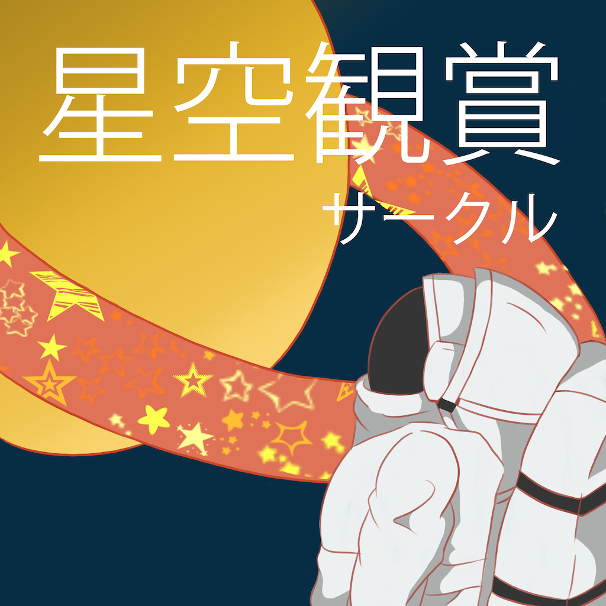

星空観賞サークルとは
SFC唯一の天文サークル、通称「ほかん」。日中は快適な部室でのんびり過ごしつつ、SFCから星空を眺めたり、望遠鏡を覗きこんだりしています。
星空観賞だけにとらわれず、オールマイティーに活動しているのもほかんの特徴。七夕祭・秋祭への参加はもちろん、合宿や遠足、BBQに流しそうめんだってやっちゃいます。
広々したSFCの雰囲気にぴったりな、自由気ままなサークルです。

SFC唯一の天文サークル、通称「ほかん」。日中は快適な部室でのんびり過ごしつつ、SFCから星空を眺めたり、望遠鏡を覗きこんだりしています。
星空観賞だけにとらわれず、オールマイティーに活動しているのもほかんの特徴。七夕祭・秋祭への参加はもちろん、合宿や遠足、BBQに流しそうめんだってやっちゃいます。
広々したSFCの雰囲気にぴったりな、自由気ままなサークルです。